Top artists and tracks
Browse your strongest artists, tracks, and albums across Spotify time ranges.
Track top artists, songs, albums, genres, snapshots, and friend taste shifts from one private Spotify-connected dashboard.
Spotify shows what is playing now. Stats for Spotify keeps the longer record: who keeps climbing, which albums return, and how your taste changes across time.

Rankings, snapshots, recaps, and friend views give the dashboard a compact system for reading your music taste.
Browse your strongest artists, tracks, and albums across Spotify time ranges.
Capture positions over time so a temporary obsession does not disappear.
Read album takeovers, hall of fame returns, and plot twists from your own data.
Compare profiles without exposing more than you choose to share.
Filterable experiments frame what the product can reveal without pretending the app has metrics it does not collect.
Spot the tracks and artists that keep moving up.
Find weeks where one album dominates your profile.

SocialSee where a friend's profile meets yours.
Choose what parts of your profile are public.
Move through older captures without losing context.
The flow is intentionally small: authenticate with Spotify, read your top items, save snapshots, then turn changes into clean dashboard views.
Use Spotify OAuth through Supabase.
Load top artists, tracks, albums, and genres.
Store ranking positions for later comparison.

04Render charts, recaps, and friend views.
The landing page previews real app surfaces instead of generic feature claims.
A focused view of top-item changes and ranking history.
A shared taste page with privacy controls.
The app includes privacy settings, data export, delete-data controls, and Spotify attribution where Spotify content appears.

Connect Spotify and turn your top items into a private, evolving dashboard.
